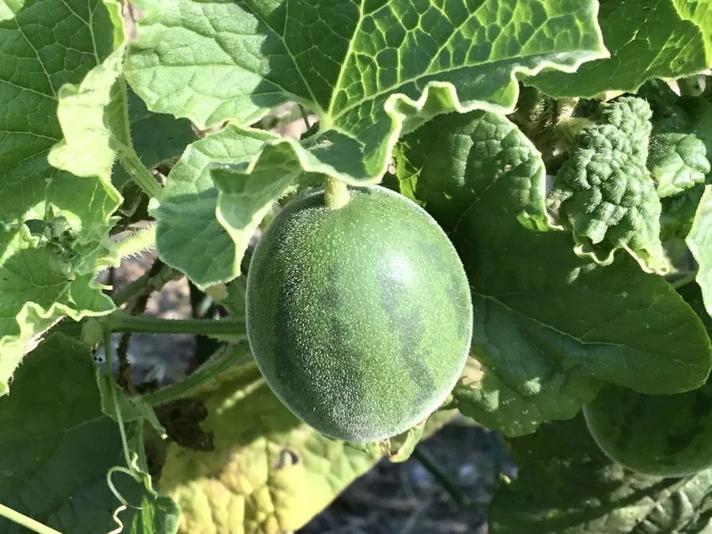

农作物与经济植物 · 植物界
甜瓜 Cucumis melo

甜瓜的果实香甜多汁，是夏季重要的瓜类水果，哈密瓜、香瓜都是它的品种，可鲜食和制瓜干。
- 分类
- 门被子植物门纲双子叶植物纲目葫芦目科葫芦科属黄瓜属
- 栖息环境
- 高温干燥、光照充足的沙壤土，昼夜温差大
- 地理分布
- 原产非洲与西亚，现主产于中国、土耳其、伊朗等地
- 保护级别
- 暂无评估（栽培作物）
物种志
甜瓜是一年生蔓生草本，茎匍匐，有棱和卷须，全株有毛。叶片掌状分裂，边缘有齿。花单性同株，黄色，五瓣。果实为瓠果，形状有圆、椭圆、长形等，果皮有黄、绿、白等色，常带网纹或条纹，果肉有白、绿、橙等色，香甜多汁，内含扁卵形种子。
甜瓜原产非洲与西亚一带，栽培历史数千年，经中亚传入中国新疆等地，如今各地广泛栽培，哈密瓜、香瓜、网纹瓜都是其中的品种。它喜高温干燥、光照充足、昼夜温差大的环境，适宜在疏松排水良好的沙壤土中种植。果实香甜可口，富含糖分、维生素和水分，可鲜食、制瓜干、做果盘；种子可榨油或食用。甜瓜不耐贮运，成熟后应尽快食用。
形态与习性
- 果实瓠果，形状多样，果肉多汁香甜
- 果皮黄、绿、白，常带网纹
- 花黄色，雌雄同株
- 类型哈密瓜、香瓜、网纹瓜等
- 习性喜高温干燥、昼夜温差大
趣味知识
- 哈密瓜、香瓜、网纹瓜其实都是甜瓜的品种。
- 甜瓜喜欢昼夜温差大的环境，这样糖分积累更多、更甜。
- 甜瓜不耐贮运，成熟后要尽快食用。